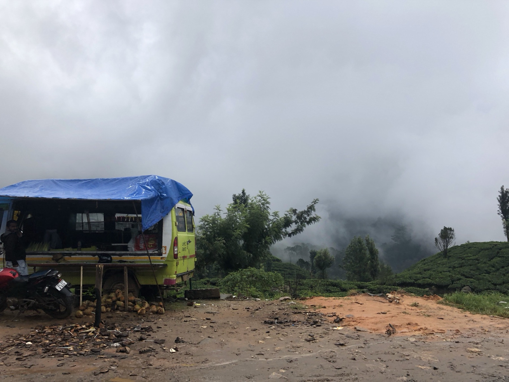

Surili Sheth

Fieldwork
My research is grounded in long-term fieldwork and collaboration with communities, researchers, and institutions across India and beyond. These photographs document some of the places, people, institutions, and research processes that have shaped my work.
Selected Fieldwork


Earlier Fieldwork
Earlier research and development work in India and South Asia.


